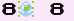

ItemDex/RB:124
(↑ Back to the ItemDex index.)
| Name (transcribed): 8 8 4 h 's Identifier (HEX): 7C Identifier (DEC): 124 Effect pointer: 203D Unterminated name glitch item?: No Tossable/Sellable?: Yes Buy Price: 509594 (508#8#) Sell Price: 254797 Name bytes: $fe,$03,$ca,$fe,$4f,$fa,$c5,$cf,$a7,$c0,$cd,$bd,$50
|
 (hex:7C) is a glitch item in Pokémon Red and Blue. It is also known as the "vblank item".[clarification needed]
It is both a battle partial escape glitch item and screen data saving glitch item.
Advanced applications of this glitch item for instant encounter infinite chain glitch and LGFly as well as English grass/rock Surfing glitch were also developed by Luckytyphlosion.
This glitch item may be indirectly involved when using unterminated name glitch items if the 0x50 sub-tile is past BGB coordinates y=08 x=02. This is because CF91 (controlling the function of an item) would likely be overwritten with hex:7C due to the relevant tile being the border tile just before "POKéDEX" on the menu, which is hex:7C.
Contents
Effect from outside of battle
This glitch item causes menus to remain open, but the player can press the Start menu to open it again. The previous screen data will be saved with all of the menus open, making 8 8 4 h 's useful for glitches such as Rival LOL glitch if a specific tile from a tile printing glitch item needs to be saved.
Glitches that involve 8 8
This glitch item can be used indirectly (via item used address manipulation) in Viridian Forest when an instant encounter (e.g. from Trainer escape glitch) is active to reload a wild encounter in instant encounter infinite chain glitch.
It is also involved in LGFly; one of the earliest mass Pokémon farming glitches. It is a combination of Trainer escape glitch, Rival LOL glitch and instant encounter infinite chain glitch.
It is also involved in English grass/rock Surfing glitch.
Effect from within battle
If in a regular wild encounter, 8 8 4 h 's may make the player partially escape from battle, which allows them to open the menu. Other times it may cause the game to freeze.
External links
YouTube videos
Instant encounter infinite chain glitch:
| |
LGFly:
| |